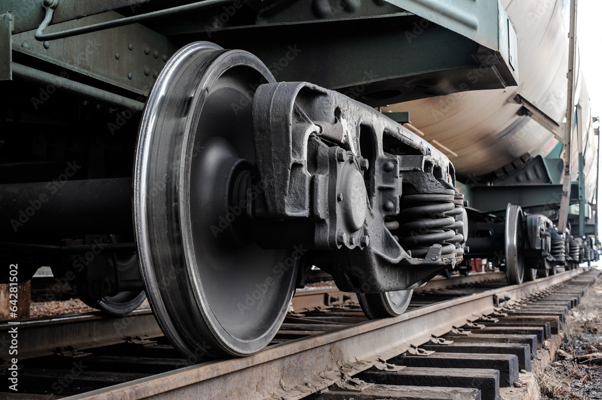
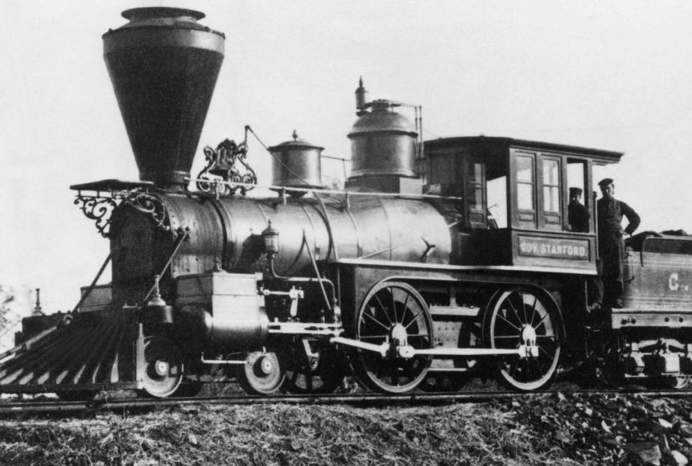
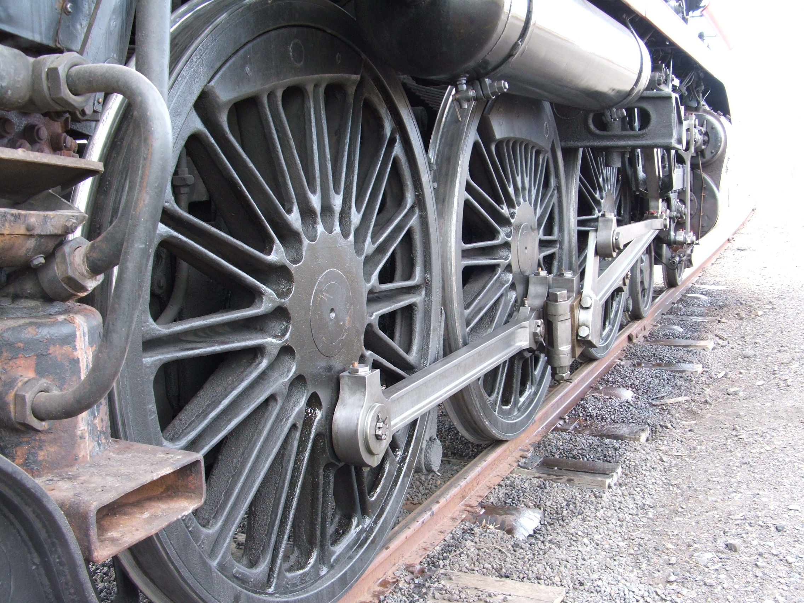
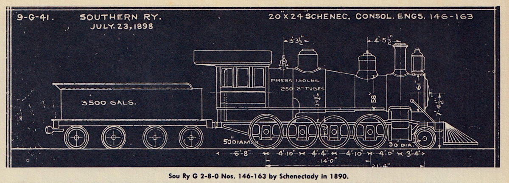
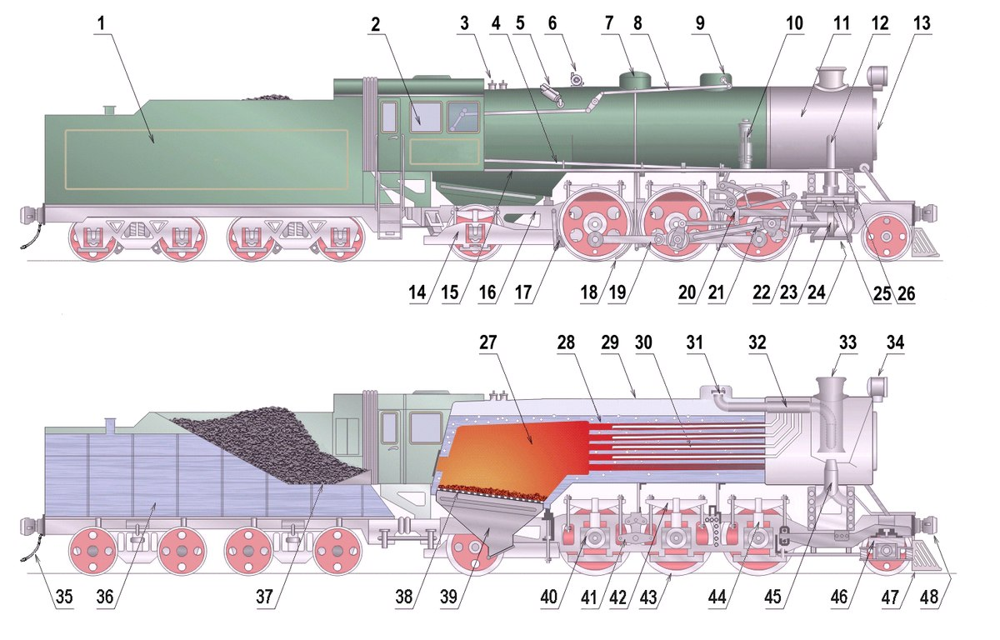
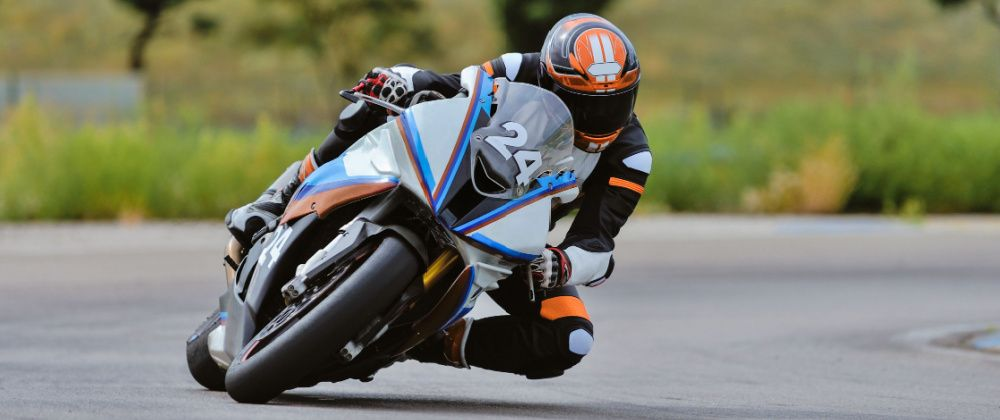
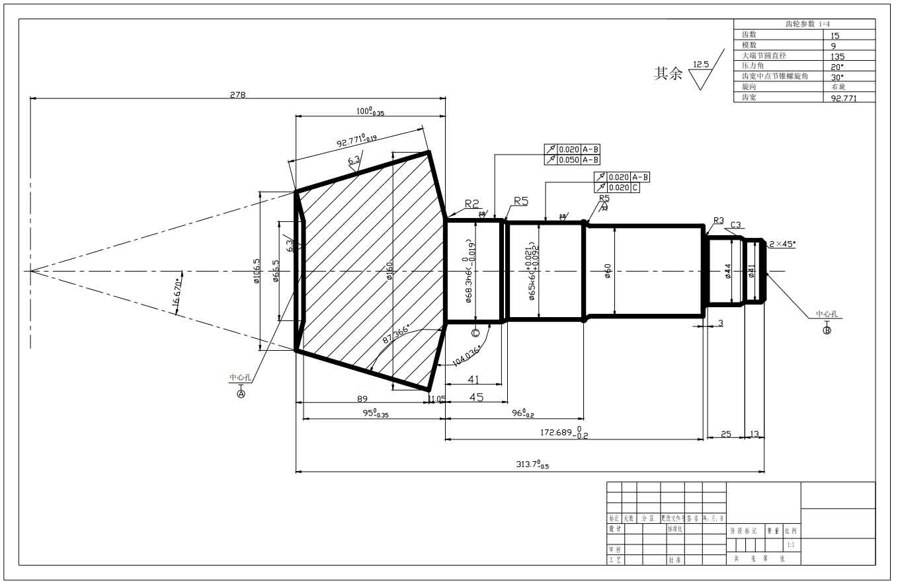

The wheels have a slight tapered shape to it.

Early steam train with conductors on board.

Close up of the drivers wheel of a steam train.

A blueprint of a 2-4-0 steam locomotive and its tender.

Inside of a steam train.Close up of steel cable.

A motorcycle is able to make tighter turns due to Cambar Thrust

Engineering drawing of a spiral bevel gear with measument and angle measurements.